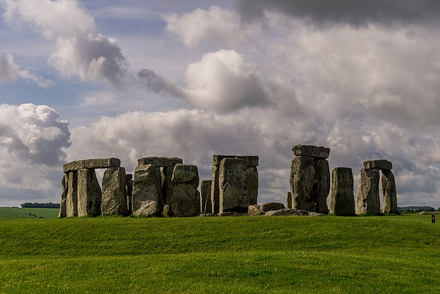
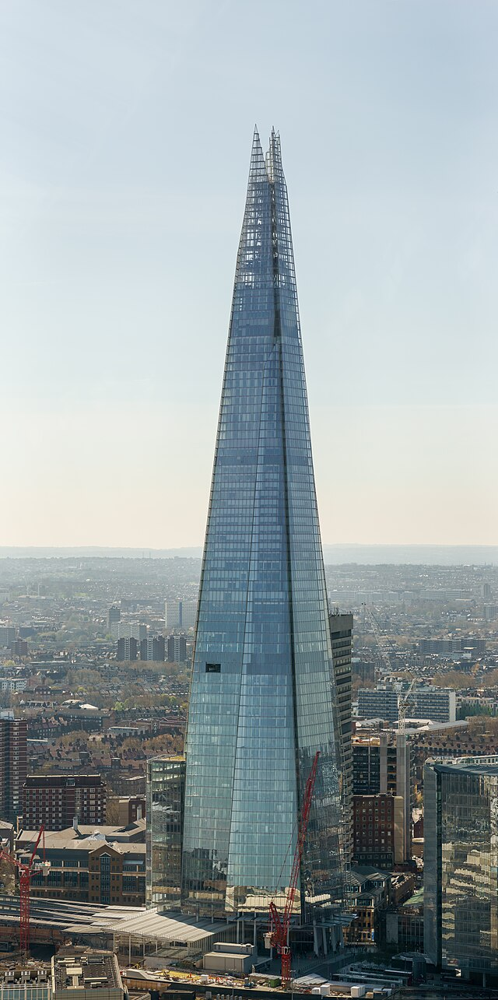
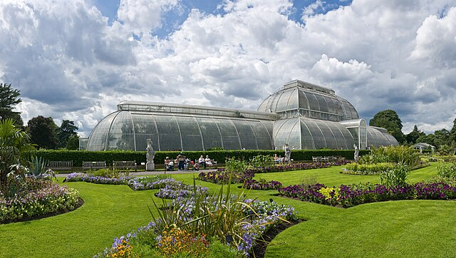
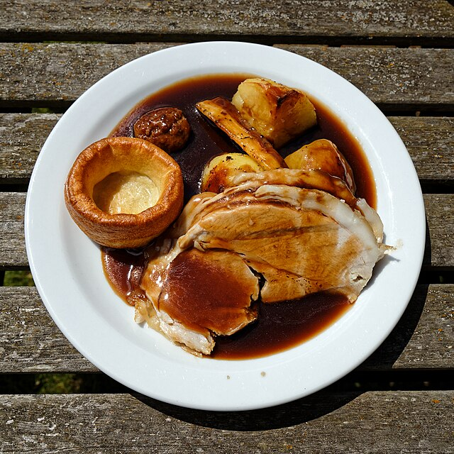
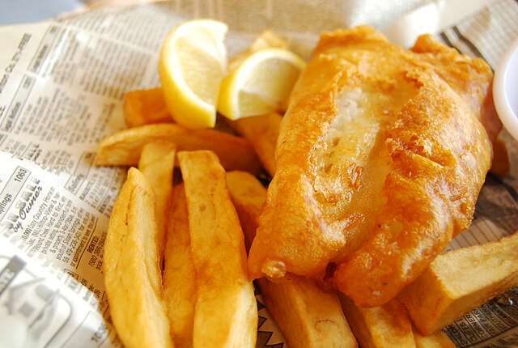

England
A beautiful country filled with small historical villages and big vibrant cities, Germany is the perfect place for people who like a mix of historical and modern.
Places worth visiting:
- Stonehenge - an ancient landmark believed to have been created in the Stone age, Stonehenge is a formation of large rocks, and is great for people who are interested in historical sites

Sumit Surai - Wikimedia Commons - CC BY SA
- The Shard - the tallest skyscraper in London, this building is made entirely of glass and overlooks the city

Colin - Wikimedia Commons - CC BY SA
- Kew Gardens - a huge botanic garden in London, this landmark is great at any time of the year. At Christmas, Kew Gardens is well-known for their amazing light shows.

Diliff - Wikimedia Commons - CC BY SA
Popular Food:
- Sunday Roast - a big lunch made up of a protein (pork, beef, or chicken), yorkshire pudding, gravy, potatoes, and carrots

The Stag Restaurant - Wikimedia Commons - CC BY SA
- Fish and chips - created in England in the 19th century, fish and chips is a staple at an English pub

Learning Lark - Wikimedia Commons - CC BY